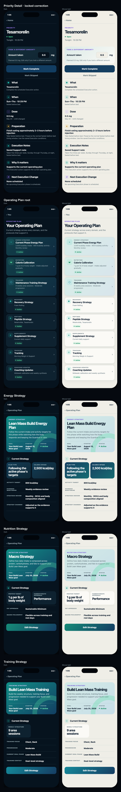
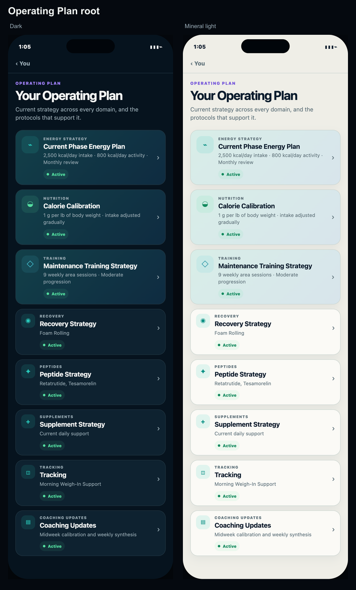
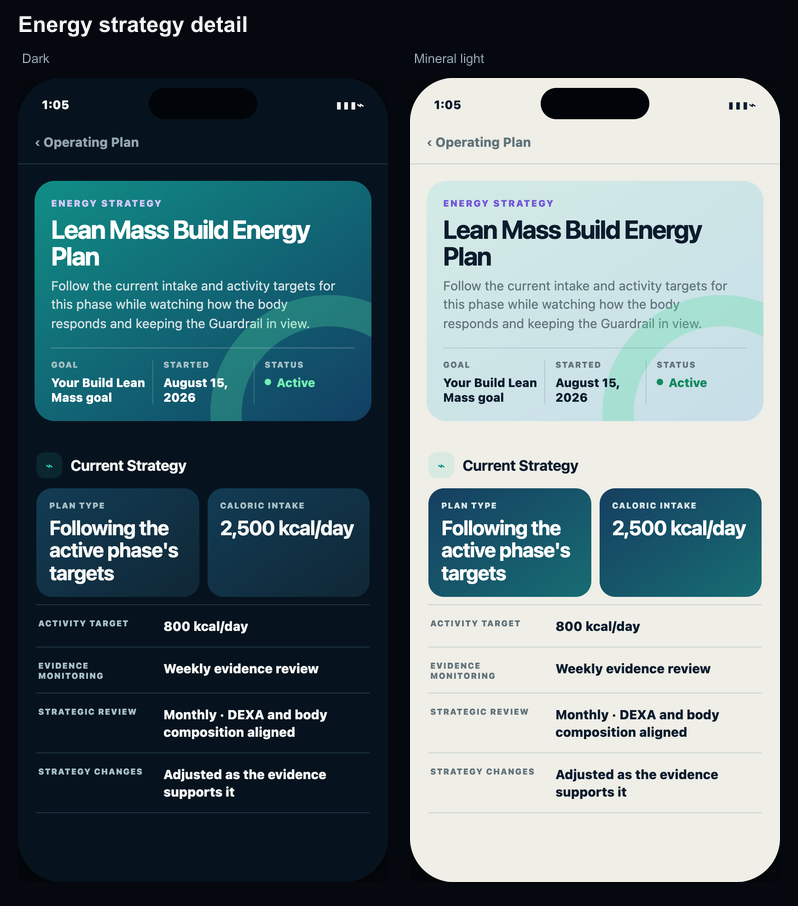
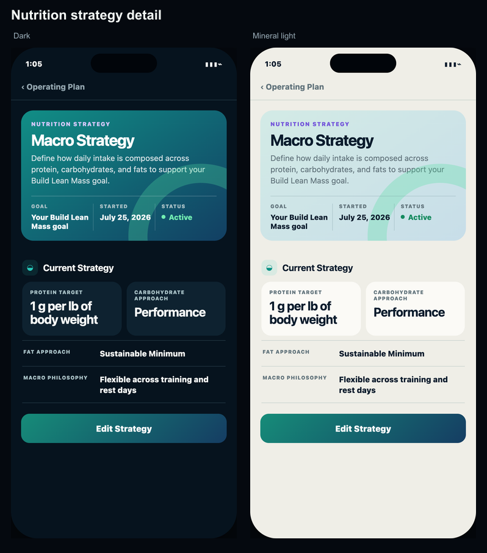
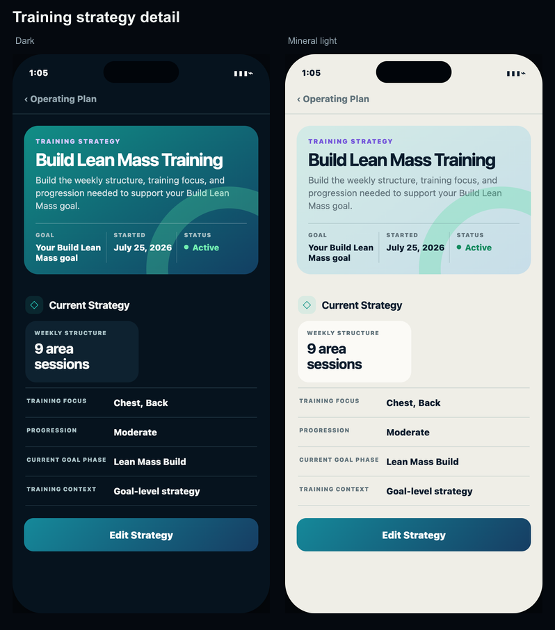

Operating Plan · Founder review
Priority Detail locked correction + root and three strategy details in dark/mineral light.

Focused pairs




Priority Detail locked correction + root and three strategy details in dark/mineral light.




